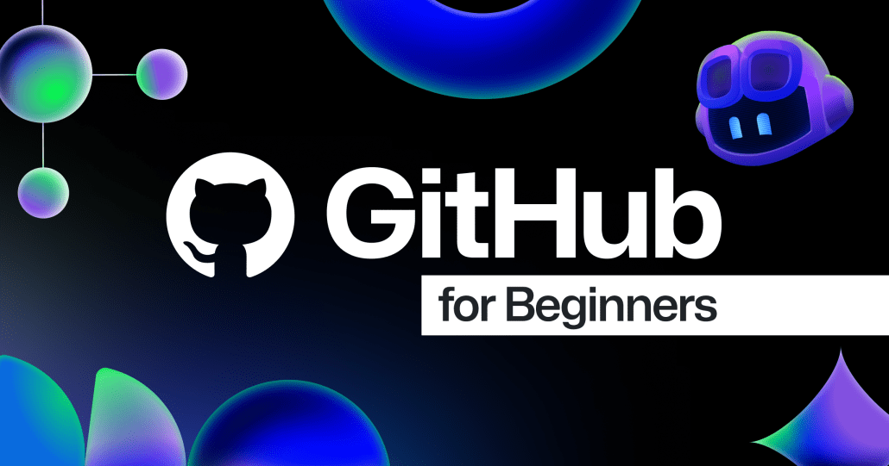
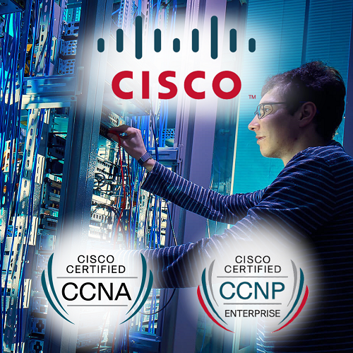

كل ما يخص قسم تقانة المعلومات و اهم المستجدات و المناقشات الهادفة

GitHub للمبتدئين: التطوير القائم على الاختبار (TDD) باستخدام GitHub Copilot
إضغط هنا
اقوة دورات الأمن السيبراني في العالم العربي و الإتحاد الاوربي،إضغط هنا

إحتراف الشبكات من الصفر مع اقوة دورة CCNA إضغط هنا
GitHub for Beginners: Test-driven development (TDD) with GitHub Copilot
تعلم كيف تبني اي مشروع من خلال دورات هندسة البرمجياتإضغط هنا
هام جداً
بناءً على قرار الأخ أ.د. مدير جامعة القرآن الكريم والعلوم الإسلامية رقم(82) لسنة 2 11م بتاريخ 3 محرم 1433هـ الموافق له 28 نوفمبر 2 11م والخاص بإعداد دراسة ووضع تصور لإنشاء كلية علوم الحاسوب وتقانة المعلومات والذي ينص على تشكيل لجنة لوضع التصور قامت اللجنة بعقد عدة اجتماعات تم من خلالها الآتي:
أولاً: مناقشة المهام الموكلة للجنة ووضع خطة لإنجاز المهام حيث اعتمدت فيها على التكليفات لأعضاء اللجنة ومناقشة تلك التكليفات من خلال الاجتماعات التي عقدتها اللجنة.
ثانياً: تم تقسيم الأعضاء إلى أربع لجان فرعية بناء على التداول والنقاش حول عدد البرامج(الأقسام العلمية) المقترحة بالكلية، حيث خلص النقاش بالاتفاق على ثلاثة برامج(أقسام علمية)، واللجان هي:
1/ لجنة إعداد تصور البنية التحتية لإنشاء الكلية.
2/ لجنة إعداد تصور برنامج علوم الحاسوب بالكلية.
3/ لجنة إعداد تصور برنامج نظم المعلومات بالكلية.
4/ لجنة إعداد تصور برنامج تقانة المعلومات بالكلية.
ثالثاً: قامت اللجان الفرعية بوضع تصور يشمل مقترح الهيكل والخطة الدراسية ومفردات الخطة وفقاً لما ورد في الكلية الأنموذج الصادرة من وزارة التعليم العالي والبحث العلمي بالإضافة لتجارب بعض كليات علوم الحاسوب وتقانة المعلومات النظيرة داخل السودان وخارجه.
رابعاً: اشتملت الخطط الدراسية للبرامج على عشرة فصول دراسية تؤهل الطالب للحصول على بكالوريوس الشرف في التخصص المعني.
خامساً: التصور المرفق في صورته النهائية خضع للنقاش والتصويب والتعديل من قبل أعضاء اللجنة